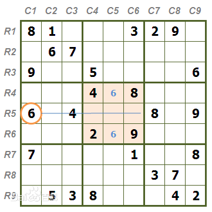
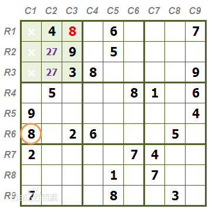

基础解法
排除法

摒除法：用数字去找单元内唯一可填空格，称为摒除法，数字可填唯一空格称为排除法 (Hidden Single)。
根据不同的作用范围，摒余解可分为下述三种：
数字可填唯一空格在「宫」单元称为宫排除（Hidden Single in Box），也称宫摒除法。
数字可填唯一空格在「行」单元称为行排除法（Hidden Single in Row），也称行摒除法。
数字可填唯一空格在「列」单元称为列排除法（Hidden Single in Column），也称列摒除法。
唯一余数法
唯一余数法：用格位去找唯一可填数字，称为余数法，格位唯一可填数字称为唯余解
余数法是删减等位群格位（Peer）已出现的数字的方法，每一格位的等位群格位有 20 个

区块摒除法
区块摒除法包括宫区块摒除法（Pointing）与行列区块摒除法（Claiming）。
在基础题里，利用区块摒除可以替代一些基础解法的观察，或辅助基础解法寻找焦点。
在非基础题里，区块可以隐藏任何其他结构，简单的可以把基础解法隐藏起来，难的可以隐藏数对等等其他进阶技巧。

数对法
当一个单元（行、列、宫）的某两个数字仅可能在某两格时，我们称这两个格为这两个数的数对（Pairs）。
数对出现在宫称为宫数对；数对出现在行列成为行列数对。
用候选数法的观点去看，数对有两种，一种是在同单元内其中两格有相同的双候选数，一看就明白，因此称为显性数对（Naked Pair），另一种是，同单元内有两个候选数占用了相同的两格，该两格因为还有其它候选数很难辨认，因此称为隐性数对（Hidden Pair）。